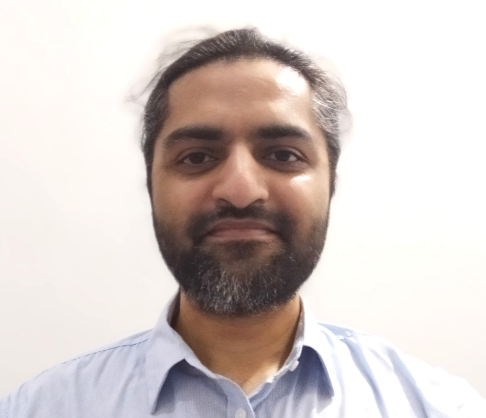

<div class="home">


<div class="post-excerpt">
<center></center>
      <p></p>

<p align="justify">I am a Political Scientist doing research on domestic sources of foreign policy. I am presently serving as an Assistant Professor of Politics at LUMS, and have previously served as an Assistant Professor in the Political Science Department at Forman Christian College University (FCCU) and as a Lecturer at the University of Management and Technology in Lahore, Pakistan. My research interests include asymmetric cooperation under the prospect of coercion from major powers, as well as opposition characteristics and their impact on external security arrangements in the Middle East.</p>
      </div>
</div>
